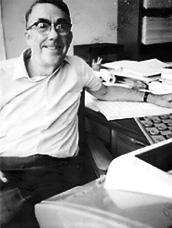

1957

Arthur L. Samuel(1901-1990) programmierte ein Schach-Spiel, das imstande war, einen Schach-Meister aus Connecticut, Robert Nealey, zu besiegen. Allerdings verlor sein Computer-Programm 1966 achtmal in Serie gegen Walter Hellman und Derek Oldbury.